Рилсы подкаста План канала Сценарии съёмки
Бизнес по-русски
Короткие ролики
Дмитрий Бобров и Игорь Малинин
Двенадцать коротких роликов из подкаста: ИИ-агенты, продажи, маркетплейсы, ошибка собственника, личный бренд. С вопросом в первую секунду, титрами и обложкой.
Двенадцать роликов
Нажмите на обложку: ролик запустится, рядом название, описание и кнопки «скачать».
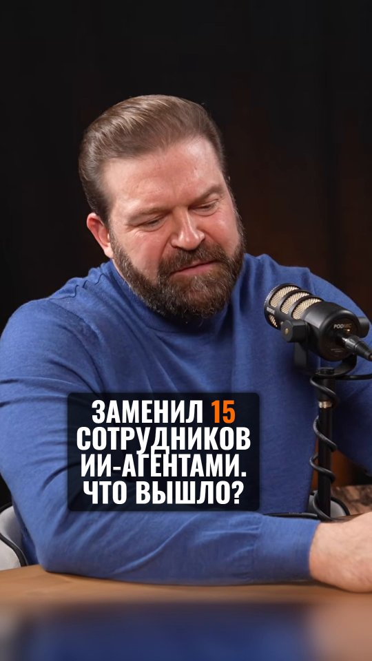
Заменил 15 сотрудников ИИ-агентами. Что вышло? 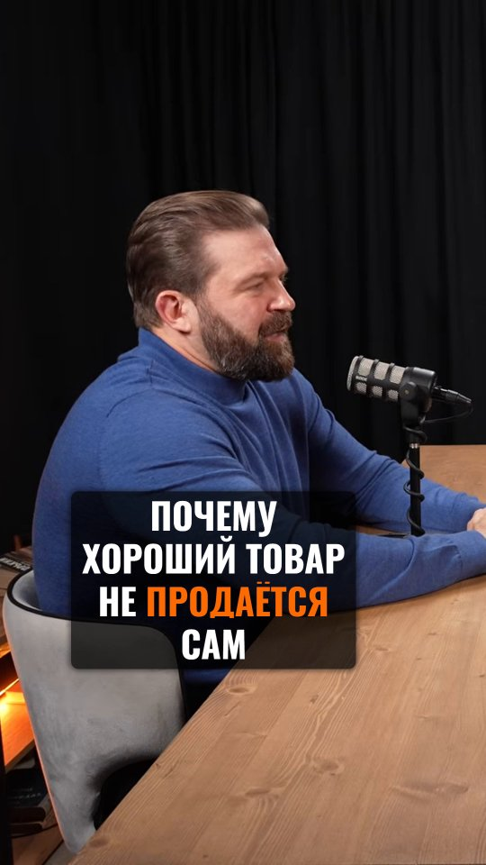
Почему хороший товар не продаётся сам 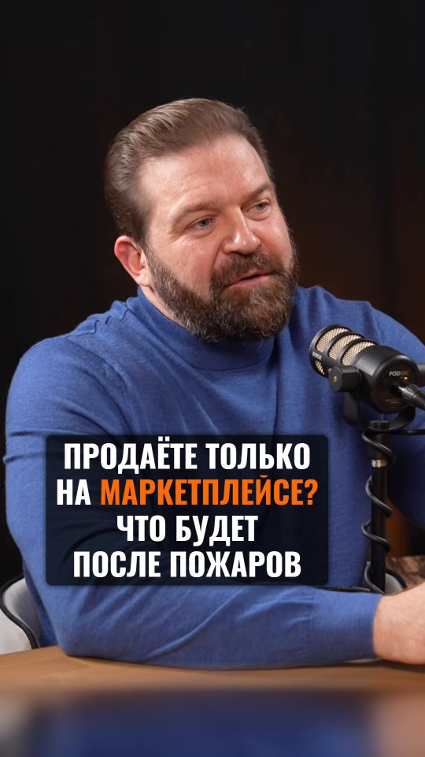
Продаёте только на маркетплейсе? Что будет после пожаров 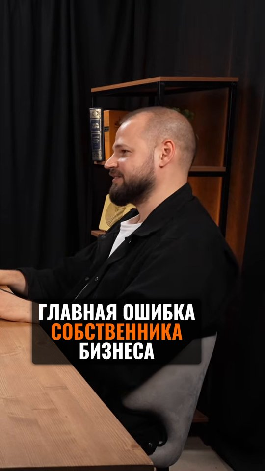
Главная ошибка собственника бизнеса 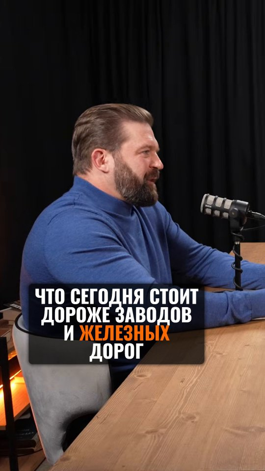
Что сегодня стоит дороже заводов и железных дорог 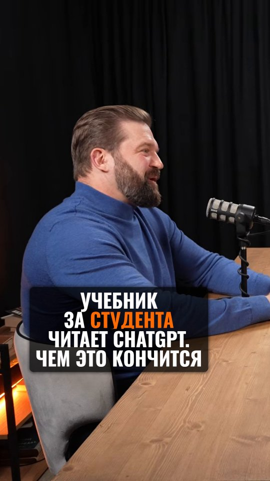
Учебник за студента читает ChatGPT. Чем это кончится 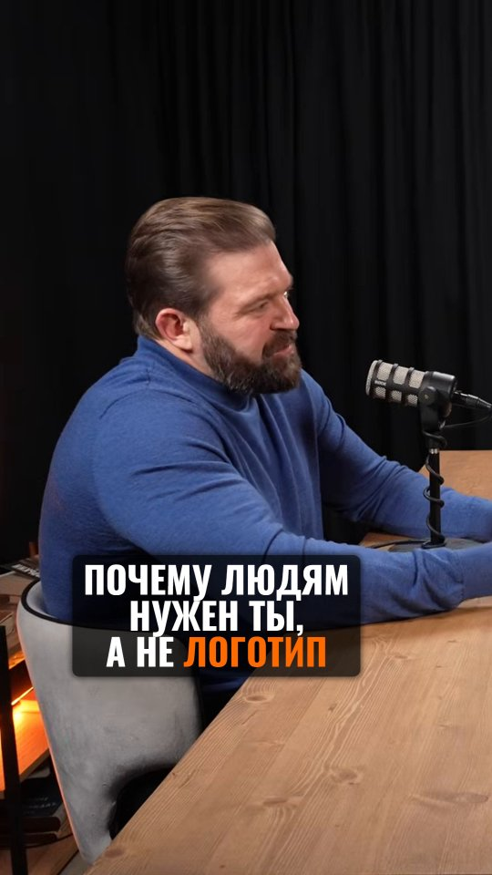
Почему людям нужен ты, а не логотип 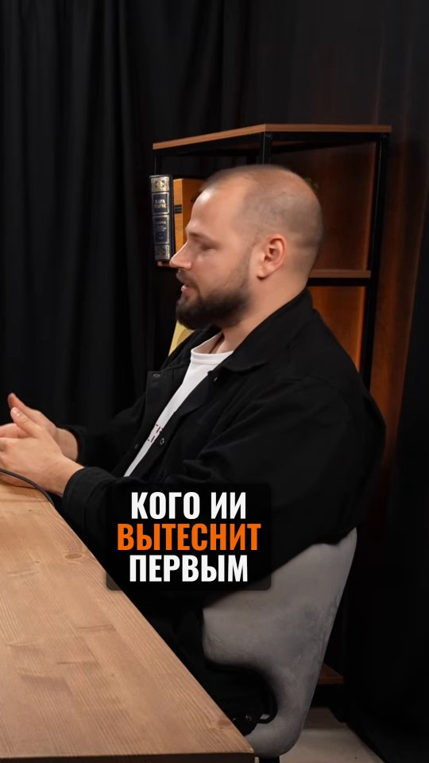
Кого ИИ вытеснит первым 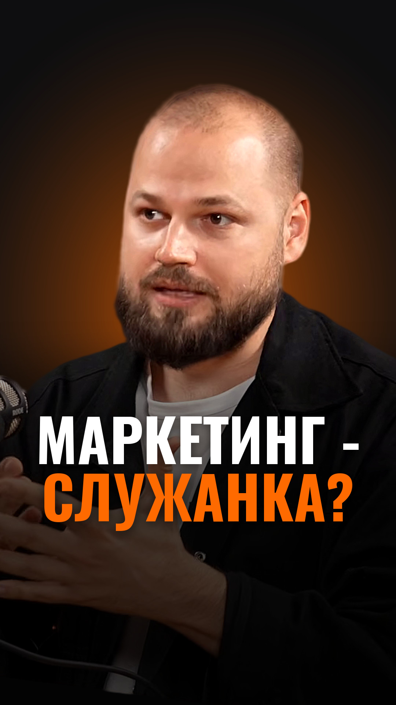
Маркетинг - служанка продаж? Ответ - два слова 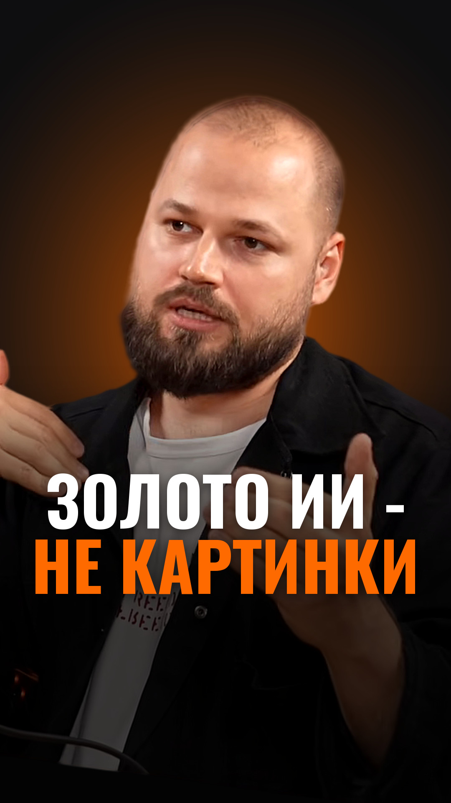
Тексты и картинки - верхушка. Где настоящее золото ИИ 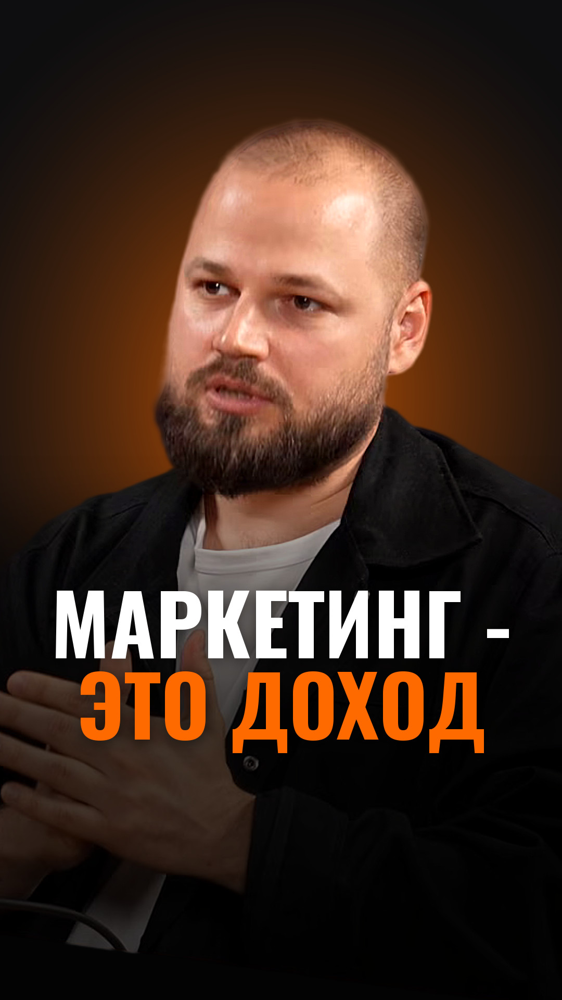
Маркетинг - расход или главный источник дохода? 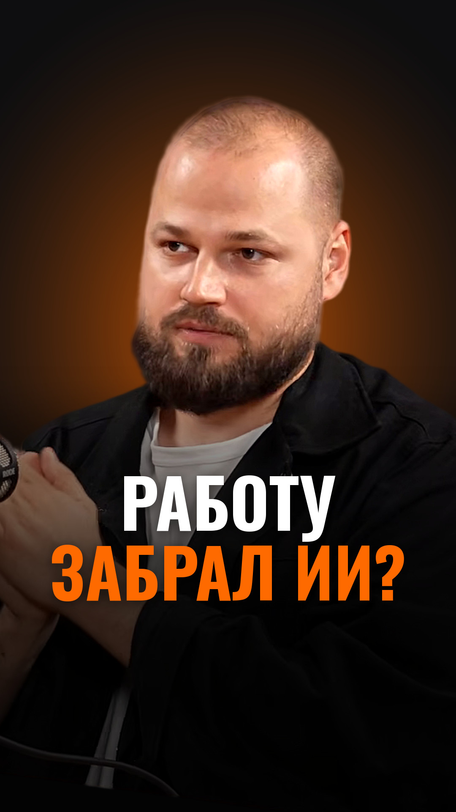
Что делать выпускнику, если работу забрал ИИ: два шага
Игорь Ильин · «Бизнес по-русски»